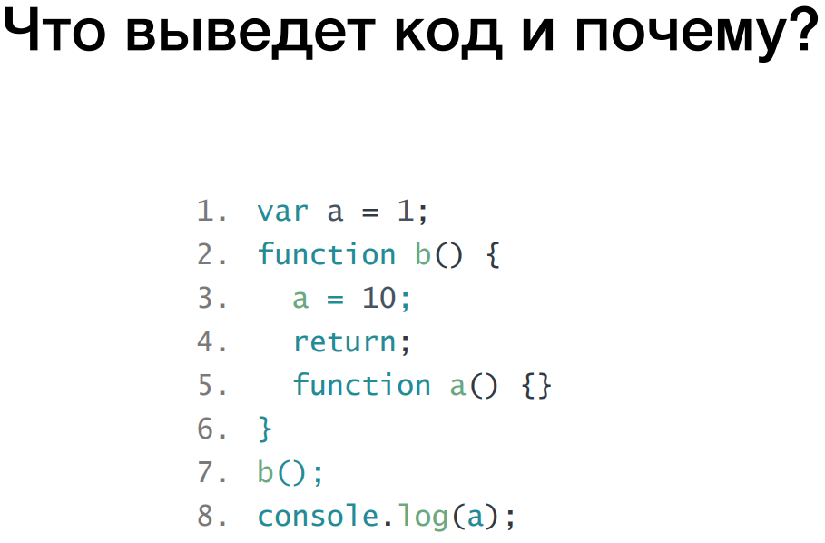

Homework - 3 - task 2
Homework description: link

При выполнее данного кода изначально создается глобальная область видимости;
Далее ищем ключивые слова function и var;
Находим в текущей области видимости переменную "a" и присваиваем ей "undefined";
Далее в текущей глобальной области видимости переменной "а" присваевается число "1";
Далее создается функция с именем "b()";
Далее происходит иницеализация функции. Создается локальная область видимости;
Ищем ключивые слова function и var. Далее создаем в текущей области видимости переменную с именем "a" и записываем в нее содержимое функции "a()".
В строке 3 ищем в локальной области видимости переменную "а", не находим, выходим на верх и ищем в глобальной области видимости. Находим в глобальной области видимости переменную "а" и перезаписываем в нее значенение равное числу 10.
В строке 4 производится возврат от функции "b()" равний ничему!!!
В строке 5 создается функция с именем "a()" с пустым телом функции;
Далее происходит иницеализация функции. Создается локальная область видимости функции "a()";
В строке 7 вызываем функцию "b()" которая не возвращает ничего так как return пустой.
В строке 8 в консоль выводится число 10.